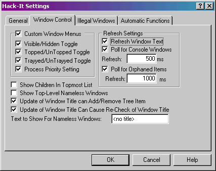

Window Control tab
-
Custom Window Menus – This option enables the custom
System Menu entries that Hack-It can provide. These entries will appear in
the system menu of any desktop window, and can be chosen from the following
options:
-
Visible/Hidden Toggle – This will add an entry
“Visible” to the system menu of every desktop window that can be used to
change the hidden status of the window the window whenever you like. The
check mark shows whether the window is currently visible.
-
Topped/UnTopped Toggle – This adds an entry “Topped”
to the system menu of every desktop window. The check mark beside the entry
shows whether the window is currently topmost or not.
-
Trayyed/UnTrayyed Toggle – This entry “Trayyed”
toggles the Hack-It provided System Tray icon. The check mark shows whether
Hack-It is providing a tray icon for this window.
- Process Priority Settings – This adds a sub-menu to the menu of any
desktop window’s system menu allowing you to set the process priority of
the process that controls that window. The available priorities are as in
the Window List popup: Highest, High, Normal, or Low.
-
Refresh Window Text – This option specifies whether
Hack-It will keep the text of items in the windows list updated. Note: Many windows will be initially added to the
list with no title, since at first creation many windows do not report one.
If this option is turned off, they will not update to the actual title of
the window. The phenomenon comes into play with Automatic Functions as well.
-
Poll for Console Windows - Console windows (Command Prompts) in some
versions of Windows are not detected when they appear. Turning this option
on sets a timer to poll for these windows and add them to the list.
-
Console Window Poll Refresh - This sets the time, in milliseconds,
between console window polls.
-
Poll for Orphaned Items - Under some versions of Windows, when a
program unexpectedly crashes or is forcibly terminated, Hack-It will not be
notified of the window's destruction. Turning on this option will set a
timer to remove these orphaned items from the window list automatically.
Note: This poll only checks for orphaned top-level windows. Child windows
should not need this feature.
-
Orphaned Item Poll Refresh - This sets the time, in milliseconds,
between orphaned window polls.
- Show Topmost Children In Topmost List - When a parent window has a topmost
child, this option will make sure that child is listed in the Topmost list.
Default is off (unchecked).
- Show Top-Level Nameless Windows - There are many top-level windows -
especially of the hidden kind - that do not have titles. This option allows
you to specify whether or not they will be added to the window list.
- Update of Window Title can Add/Remove Tree Item - If a window with no
title gains one, or if a window with a title loses it, this option specifies
that those windows will be added to or removed from the window list,
respectively.
- Update of Window Title Can Cause Re-Check of Window Title - If a window
title changes, this option specifies that the window will be re-scanned for
validity. If it turns out to no longer be a valid window for your
configuration, it will be removed from the window list.
- Text to Show For Nameless Windows - This is the text shown in the list for
windows that do not have a title. It can be anything you like.
